Step 3: Detecting Design Errors and Run-time Errors
Contents
- Introduction
- Verification and Validation Tools Used
- Running Dead Logic Detection on the Model
- Analyzing the Dead Logic Detection Results
- Running Divide by Zero Detection on the Model
- Analyzing the Divide by Zero Detection Results
- Automating Design Error Detection Checks
- Run-time Error Checking of S-Function Code
- Summary
Introduction
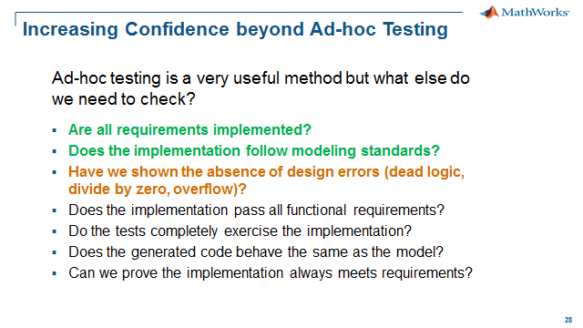
There are many different ways to perform testing in Simulink. Traditionally, verification involves the user creating a set of test vectors based on certain requirements. The user can also create a set of expected outputs matching the giving inputs, or visually analyze the simulation making sure the behavior is as expected. The type of test vector created can be either functional, or based on certain robustness criteria or standards. With this method, the quality of the test is entirely based on the quality of the input vectors and being able to capture or reproduce a real world scenario as closely as possible. This topic is covered in Step 4: Testing by Simulation.
One of the benefits of Model-Based Design is the ability to apply other “non-simulation” techniques to your model. These formal techniques are most beneficial when you are working with logic-intensive models. In this section, we will use Simulink Design Verifier to formally analyze our model for us to check if there are any unreachable states or transitions and if there are any divide by zero design errors. The recommendation is to run these design error checks before executing the simulation based tests to catch errors early and have a more efficient testing workflow.
There are three main functions Simulink Design Verifier:
- Design Error Detection: Focus of this step, finds hard to find design errors including dead logic, divide by zero, overflow and out of bound array access
- Test Generation: Focus of Step 5: Test Case Generation, generate test cases based on model objectives and/or coverage objectives to augment functional test cases
- Property Proving: Focus of Step 7: Property Proving, model the expected behavior and prove the implementation will always meet requirements
In addition to formal techniques for model checking, there are formal techniques for code checking. These methods are similar to the checks for the model and we will will perform these checks on the associated code for an s-function block in the model. We will be using Polyspace Bug Finder to analyze the code for run-time errors including dead code, divide by zero, overflow and out of bound array access.
Verification and Validation Tools Used
- Simulink Design Verifier
- Polyspace Bug Finder
Running Dead Logic Detection on the Model
In this step, we are going to use Simulink Design Verifier to analyze our model. Our goal is find dead (unreachable) logic. We can also analyze our model for design errors like integer overflows, division by zero and out of bound array access.
Simulink Design Verifer uses formal methods which means that the analysis is "exhaustive" compared to simulation-based testing which is "non-exhaustive".
We will be using the "CruiseControl" model similar to the model used in the ad-hoc testing we performed on the floating point, prototype model. Our goal is to generate production code, so one step towards production will be replacing the floating point signals and parameters with integer types.
To perform the dead logic analysis, do the following:
1. Open CruiseControl_IntCalc.slx – click here.
2. Go to Analysis, Design Verifier, and Options.
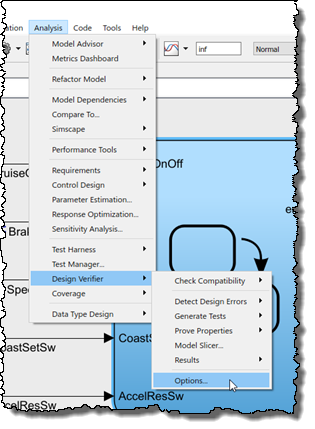
3. Go to Design Error Detection, check Dead logic, check Identify active logic and select OK.
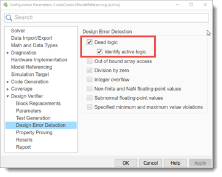
4. Go to Analysis, Design Verifier, Detect Design Errors, and select Model.
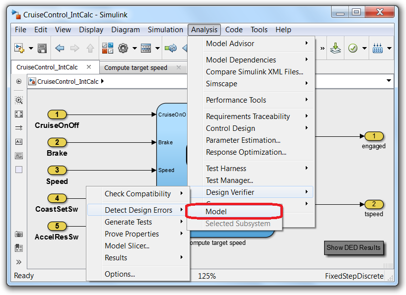
The following status window should appear. Near the top of the status window, there is information that tells the user the current status. In this case, the model has total of (70) objectives. Each objective matches a particular coverage criterion. For each decision or transition, there are two objectives: one for decision result of true and one for false. There are also two objectives for each condition. So a single condition decision would only have (2) objectives but a double condition objective would have (6) objectives: (2) for the decision and (4) for the two conditions.
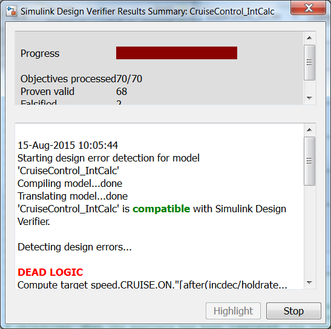
The analysis will show (2) falsified objectives.
Falsified objectives mean that there are dead logic in the model, and there are no test vectors that will ever achieve those missing coverage objectives. When the analysis has been completed, the results are displayed using model coloring (green = active logic, red = dead logic). In addition, a detailed report is also generated. See pictures below.
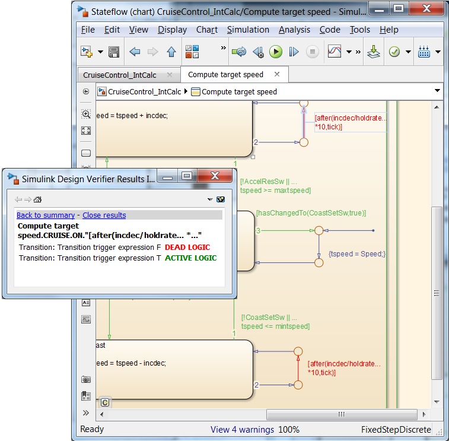
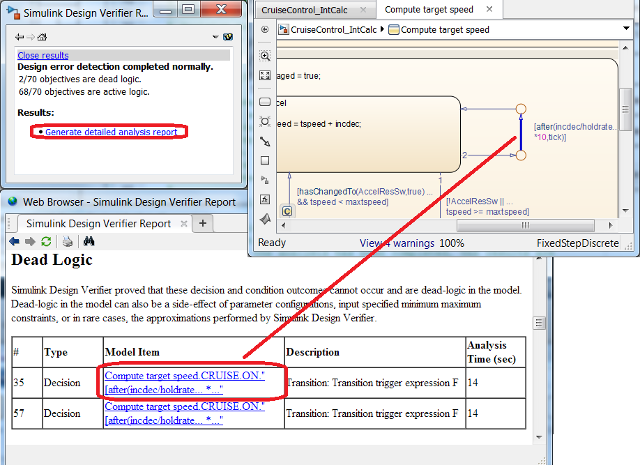
Please take a few minutes to see if you can find the reason why the objective was falsified by the tool. The solution is given in the next section.
Analyzing the Dead Logic Detection Results
Let’s take a look at the results and see what might be causing the error. Do the following:
1. Navigate to the Stateflow Chart in the CruiseControl_IntCalc model. The chart is colored in green (= active logic) and red (= dead logic).
2. Click on the red transition arrow which is where the dead logic has been found.
The following information is displayed:
This means that Transition Condition 2, after(incdec/holdrate*10,tick) can never be false. But why can this transition not be false? We will use the main model, CruiseControl_IntCalc to help us gain insight into why the transition can never be false.
3. Set a breakpoint on the default transition with the setting When transition is valid.
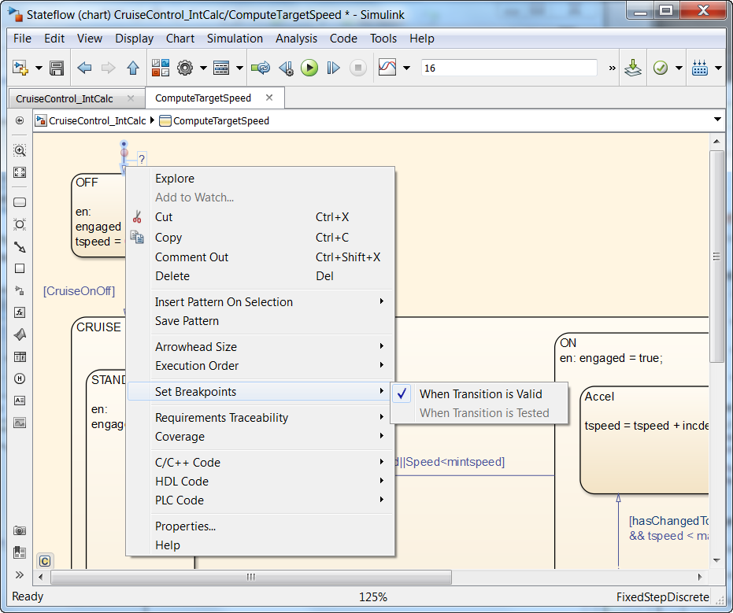
3. Run the main model and examine the transition in the MATLAB Command Window by entering commands as shown below:
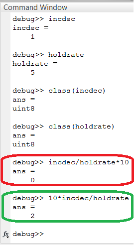
As we study the parameters used in the transition calculation, we find that by replacing the floating point parameters with integer type parameters, the transition calculation will always be zero.
4. Replace the transition calculation after(incdec/holdrate*10,tick) with a change in the order of calculations to after(10*incdec/holdrate,tick) or to load the fix CruiseControl_IntCalcFix.slx – click here.
5. Rerun the dead logic analysis. Go to Analysis, Design Verifier, Detect Design Errors, and select Model. Confirm the transition condition design error is now fixed.
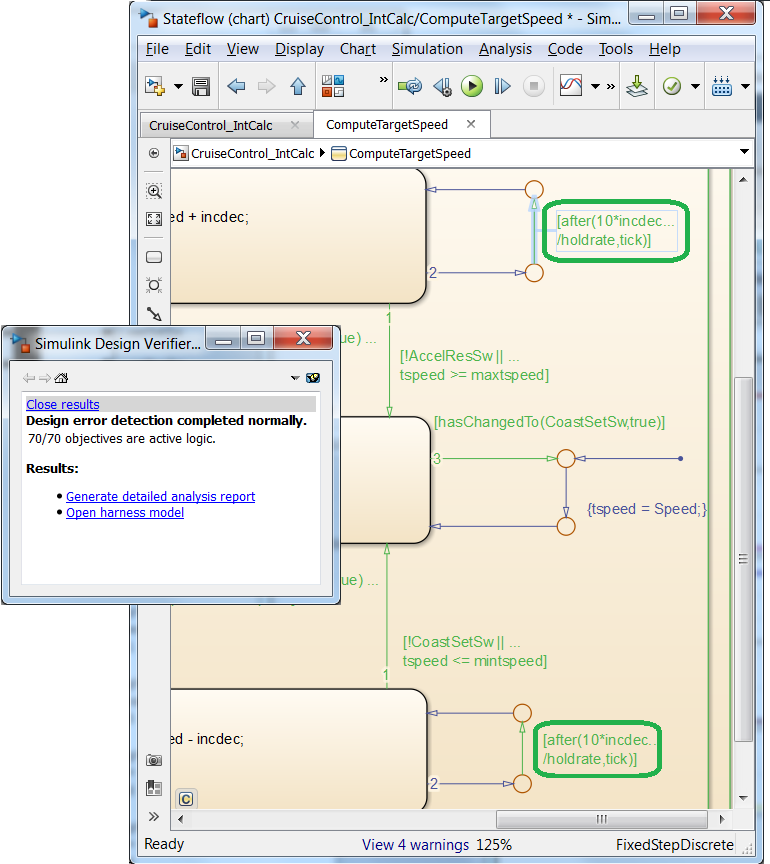
Running Divide by Zero Detection on the Model
Another feature of Design Error Detection is the ability to analyze the model for calculations that result in a divide by zero. For the dead logic detection we used the nominal calibration value of (5) for the "holdrate" and (1) for "incdec". Calibrations typically have a range of values that are permissible within specified limits. Simulink Design Verifier provides a means to perform the analysis over a range of values. To perform the "divide by zero" analysis, do the following:
1. Open CruiseControl_DivByZero.slx – click here.
2. Specify a range of parameters to be used for the analysis. Go to Analysis, Design Verifier, and Options to open the configuration window.
3. Go to Parameters, check Enable parameter configuration, check Use parameter table. Select Find in Model to populate the parameter table. Uncheck the Use column for "maxtspeed" and "mintspeed".
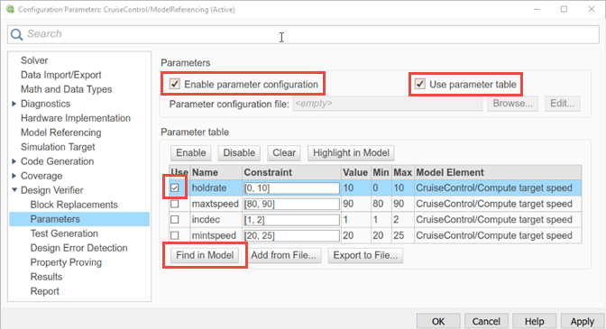
4. In the same configuration dialog, go to Design Error Detection, check Division by zero, and select OK.
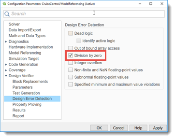
5. Go to Analysis, Design Verifier, Detect Design Errors, and select Model to run the analysis.
Analyzing the Divide by Zero Detection Results
Let’s take a look at the results and see what might be causing the error. Do the following:
1. In the Results Inspector window, select Generate detailed analysis results. We will look at the results to help us debug the divide by zero issue.
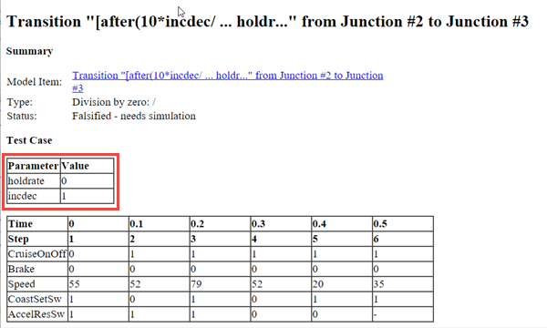
Since the analysis included the use of a parameter table to specify a range of parameter values that were part of the analysis. Navigate in the report to the "Parameter Constraints" section to verify the range that was used in the analysis. Next look at the generated test cases, noting the parameter values that were used in the test cases.
2. From the Results Inspector window, select Create harness model. Run "Test Case 1" to debug the issue.
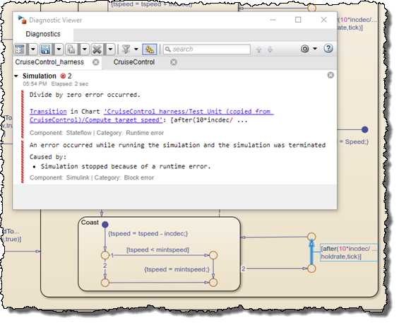
3. The cause of the issue is the "holdrate" lower limit value of (0). Change the lower limit of "holdrate" in the workspace to (1).
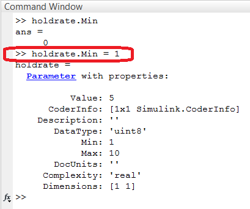
4. Go to Analysis, Design Verifier, and Options to open the configuration window.
5. Go to Parameters, select all parameters and press Clear. Next select Find in Model to populate the parameter table with the new "holdrate" limits from the workspace. Make sure to uncheck the Use column for "maxtspeed" and "mintspeed". Select OK.
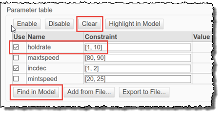
6. Go to Analysis, Design Verifier, Detect Design Errors, and select Model to run the analysis. Confirm that the issue has been resolved.
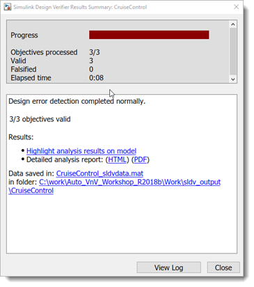
Automating Design Error Detection Checks
What we have shown is an interactive, manual way to run the checks. There is an automated method to run the Design Error Detection checks on the model with Model Advisor.
- Go to Analysis, Model Advisor and select Model Advisor
- In the popup window, choose the top model, CruiseControl_DivByZero to analyze
- As shown below, navigate to Model Advisor, By Product, Simulink Design Verifier, Design Error Detection
- Select (2) checks to run: ^Detect Dead Logic and ^Detect Division By Zero
- Press Run Selected Checks for the Design Error Detection group of checks
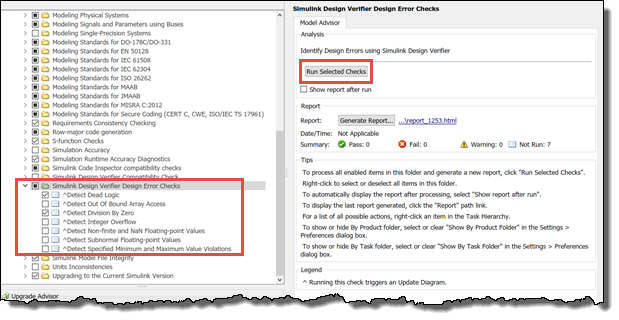
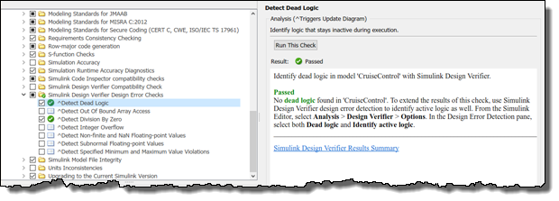
With the inclusion of Design Error Checks in Model Advisor you now have the option of adding these checks as part of your development and testing workflow. These checks may be a pre-condition to begin the more formalized testing shown in Step 4: Testing by Simulation.
Run-time Error Checking of S-Function Code
From the model we can check our s-function code for run-time errors. This helps us to find these issues early in our development, ideally before simulation based, functional testing.
Open the Cruise Control Application and S-Function Model Reference model CruiseControl_Integ_PS.slx by click here.
Build the project to generate the code prior of running Bug Finder to detect run-time error.
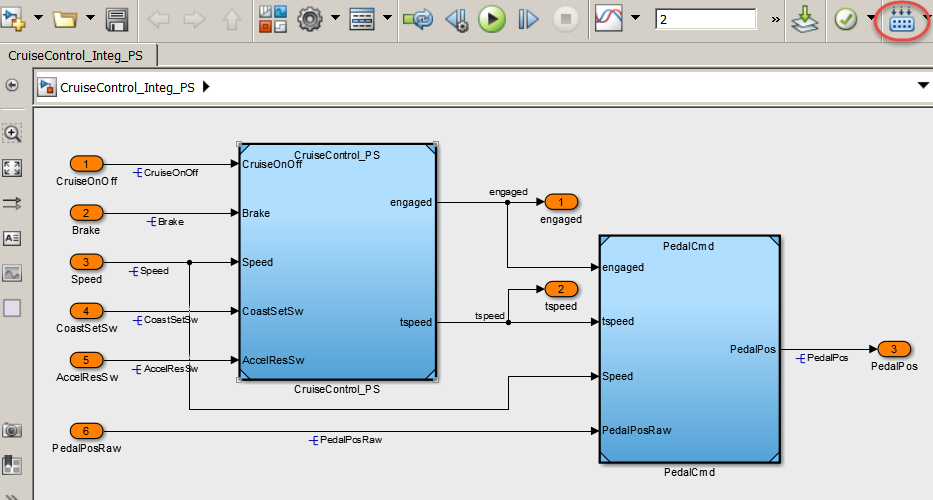
Open Bug Finder Configuration window from the Model.
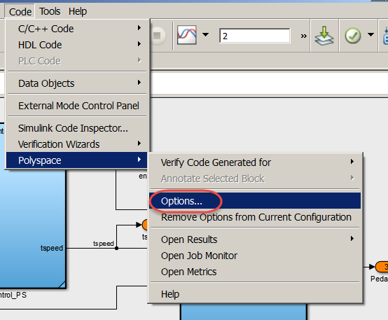
Enable all the Bug Finder Analysis check and save the Polyspace Bug Finder window and close the window.
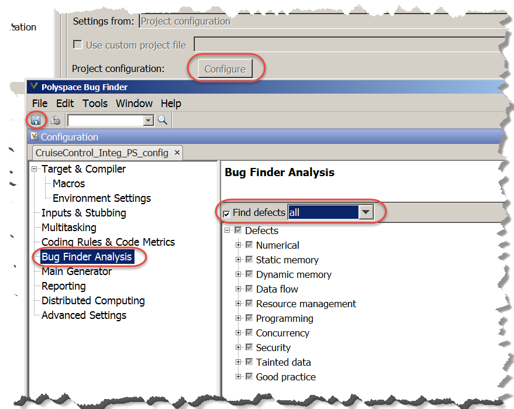
From the model Configuration Parameters click on “Run Configuration” This invoke Bug Finder analysis from the Model.
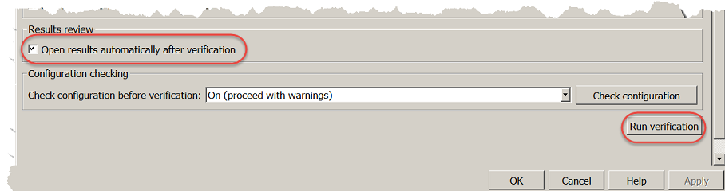
Let’s look at Bug Finder results and investigate the issue. Modify the hand source code (Lookup1D_C.c”) at line 26, add a logic at (mySize-1) to prevent array access out of bound.
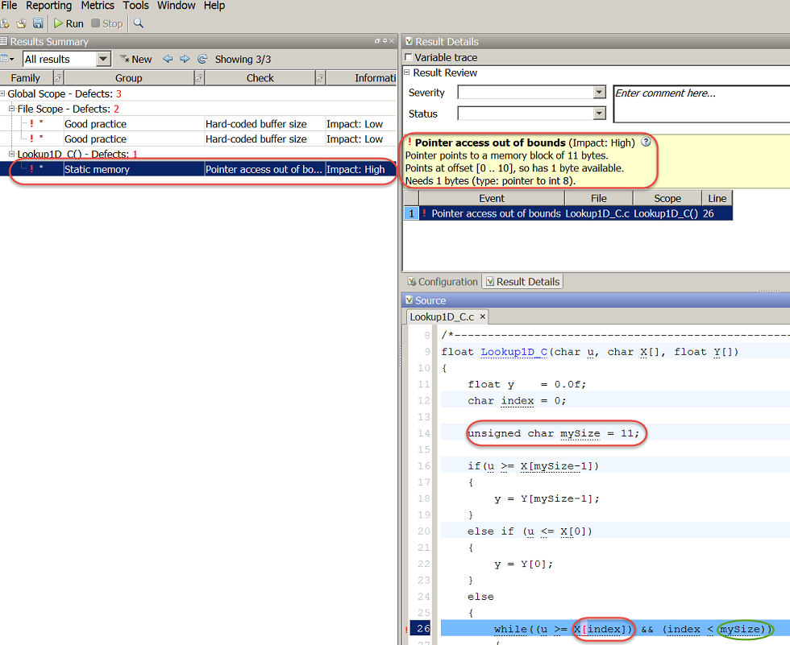
After modifying the hand code as follow, re-run Bug Finder and review the results.
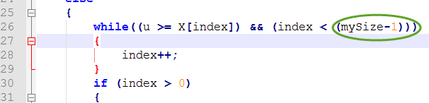
Re-run Bug Finder analysis and there is no Pointer access out of bounds error:
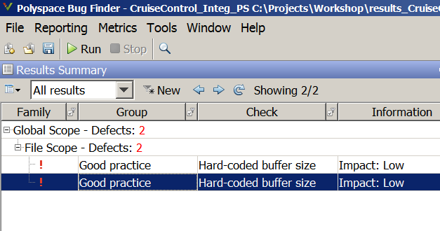
Summary
With the functions above, we were able check our Cruise Control model for difficult design errors like dead logic and divide by zero. The analysis was very automated with minimal work to configure the analysis to run on our model. We utilized the Design Error Detection function of Simulink Design Verifer to find the design errors.
The Design Error Detection function is based on formal methods which does not require dynamic execution of the model or the creation of test vectors to perform the analysis. Formal methods use the entire specified range of signals and parameters to prove the absence of design errors. If during the analysis, a design error is found then a test case is generated including the input test vectors and parameter values. A test harness can also be created to execute the test case to isolate and fix the design issue.
When the Design Error Detection analysis was performed on our Cruise Control model, two types of design issues were found: dead logic and divide by zero. It was easy to use the generated test harnesses to fix these issues. We were able to find and fix these issues early in our development process, increasing confidence in our design. We will continue to answer more of the questions in the next steps with our structured and formal testing framework for securing the quality, robustness and safety of our cruise controller.
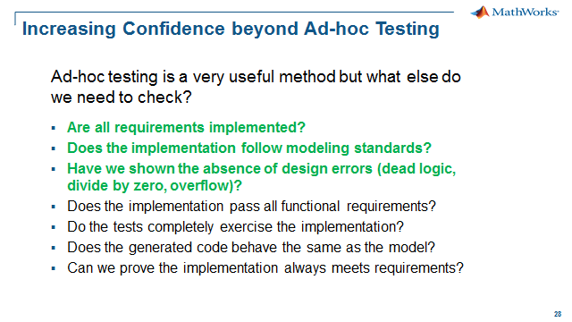
When you are finished, close all models and files - click here.
Go to Step 4: Testing by Simulation - click here.